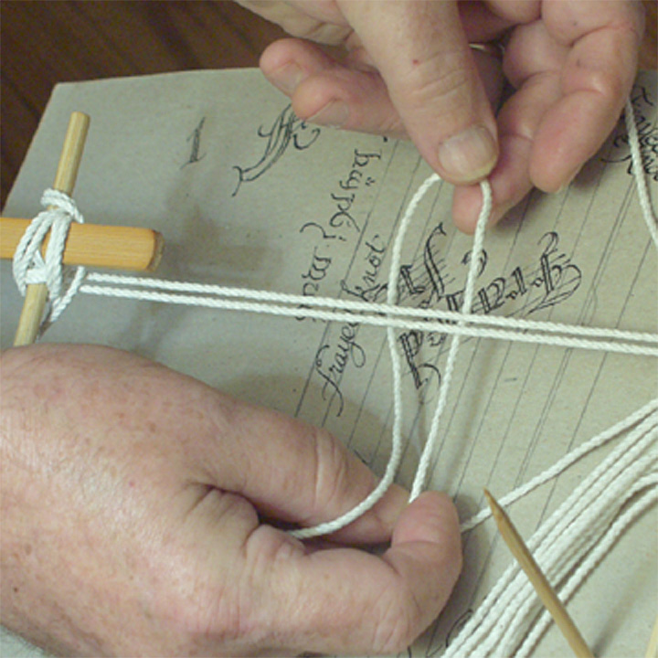
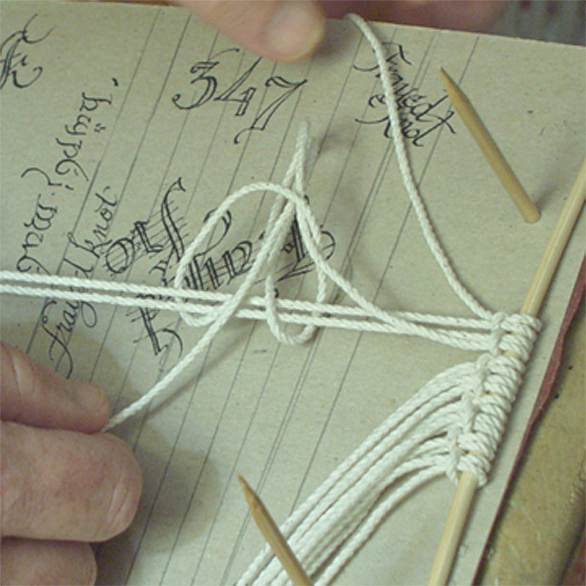
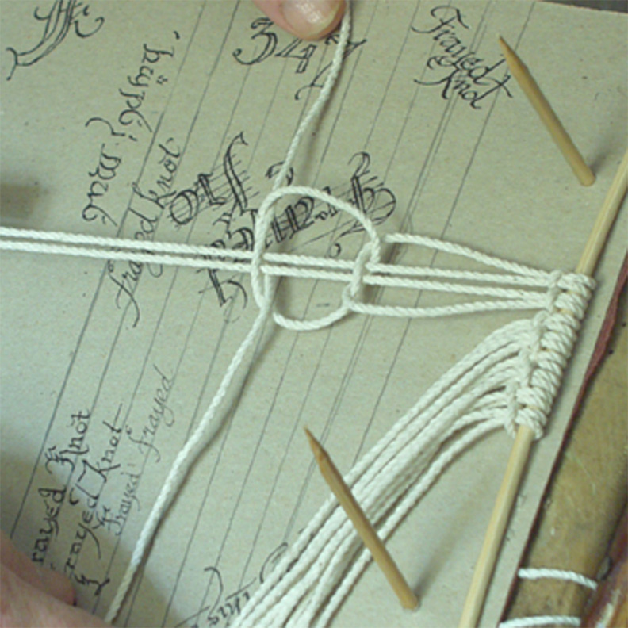
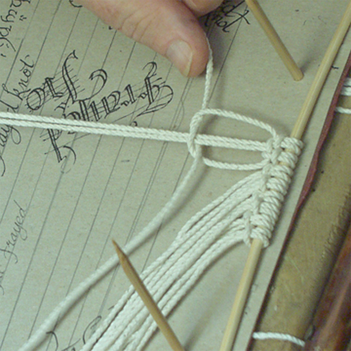
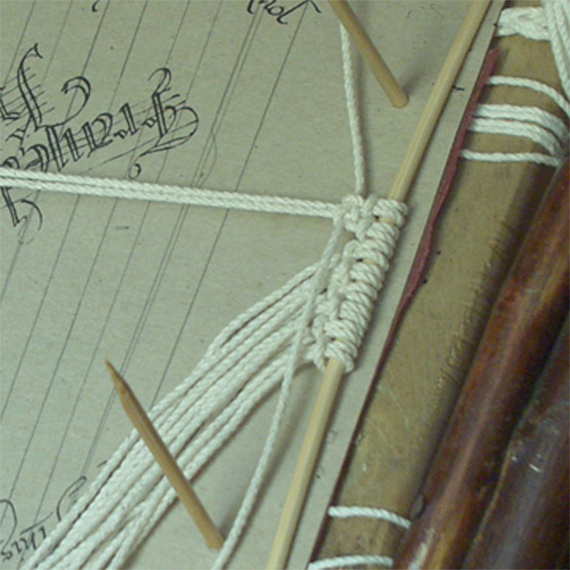

If you know me, you'll know that I'm no photographer! Still, in honour of a request I received from the Head Knothead of Knotheads Worldwide, I have made the following tutorial on how to completely muck up a square-knotted belt.
Tip: #24 line used below, for which 16 lines gives appx 1-3/8" width belt. Smaller line will permit more sets across for the same width. 1-1/2" is about max normal width!
My workbench currently is a hard-maple TV Table to which I have screwed a crossbar (scrap maple deck stanchion end) using a three inch wood screw and four washers between the table itself and the bar to provide spacing for the skewers which provide stability for the work. I also "clamp" the work with another skewer which goes across the work and under the lashings shewn to the left and right of the work in the picture.' (The bucket holds ten pounds of "Sackrete" concrete mix which keeps the table from tipping over onto me... you can use that, dirt, water (not recommended) or a large cat, as you prefer. (Pic. #0) To begin a belt (for real), one would larks-head the number of lines to be used around the fixed end of the buckle, being sure that the tongue is in the proper position and that the larks heads are all facing up. Here I have done this direct to a skewer, since this is only a demonstration belt and have lashed that on top of a piece of cardboard to provide a focal plane as well as a bit of contrast for the pictures. (see below: Pic. #1) Here also I show my "belly-hook" which is a piece of bamboo (from a toast-grabber! If you carefully separate the legs of the toast-puller you can get two legs! Such a deal!) to which has been lashed and glued a 5" piece of round chopstick. By making up the standing parts of the knots as though the belly-hook were a dock bitt, you can hold up to six pair of lines at a time.

Tip: Clean your hands often, especially when using white material, and clean your area often as well... dust gets into the lay of the lines and dirty is quite apparent on these belts. Note: Most belters will work in a standing position with the work level with their eyes and a long drop at their feet. I prefer to sit down, (1) because I'm old and lazy, (2) because my back hurts and (3) quite enough Irishmen have stood at the edge of a "long drop", thank you very much, indeed!

(Pic. #2) Shows the larks-heading of the lines onto the skewer preparatory to the debac... I mean, starting the belt. For a larks-head direct to the beltbuckle attachment, measure EIGHT TIMES the desired length and then middle it and put the larks-head directly to the buckle's attachment point! Be sure the larks-heads are all made the same way! If you are making up the belt and will be adding the buckle later on, measure EIGHT TIMES, middle it and then do the larks- heads around a skewer. Do the simple square knotting until you have about three inches and then consider THAT POINT to your beginning... This allows enough "fabric" to fold over and sew to the belt's back to hold the buckle. Note that this is a good measurement for all belts which do NOT utilize "Chevrons" and "Diamonds"... For those, you should measure NINE to TEN times the finished length, depending on how many Diamonds or Chevrons you'll be putting in. (It's MUCH better to waste some material than to come up short!)

To start the belt, take ALL the lines in your RIGHT hand and drop the FIRST on the LEFT, then hold the next two and drop the FOURTH and FIFTH, HOLD the next two, DROP the next two and so on, until you've reached the other side. TERMINOLOGY: Of any given set of four lines, the OUTBOARD two are the working lines while the INBOARD pair are the "filler" or "standing" lines. Smooth all the lines from the gripe toward your belly and make them all up (as flat as possible) on your bellyhook, just like you were making up to the pier. (See Pic 1 and linked instructions.) You want to get an equal (or nearly so) tension on all lines.

Right. Now, there are those who say the only way to make a squareknot is to take the two lines and do the "Right Over Left and ... Ahhh ... Err ..." method, but I use the "Loop And Pull" method, which is much faster. Also, I don't get so confused by all those "Lefts", "Rights", "Unders" and all that lot. (For picture clarity, and to preserve your (putative) sanity, I am only showing ONE set of filler cords!)
Follow the bouncing instructions: Take the line FOUR and make a loop UNDER lines TWO and THREE as shewn in (Pic. #3).
Push the standing parts of Line Four (see the right hand above in PIC. #4) up around lines Two and Three and pull them through the bight you formed with the LEFT hand. This should look like (Pic. #4). (If you don't get this part right, just stop and work at it until you do...) (Thank you, Uncle Doug!)

Now, take Line ONE and pull it THROUGH the double bight formed when you complete6d the step above. Pull it completely through at this time (Pic. #5).
(Pic. #6) shews what you now should have after going through the previous gyrations.
SNUG up the top part of the knot to the larkshead, (Pic. #7) then...
SNUG up the bottom part (Pic. #8) and you've got the first of the many, many knots required to build the belt. ( NOTE: We're not trying to strangle Aunt Matilda here, so don't REEEEELY tighten the knots up, just get 'em nice and snug.) TIP: If you DO overtighten you'll have uneven rows and sloppy-looking knots.